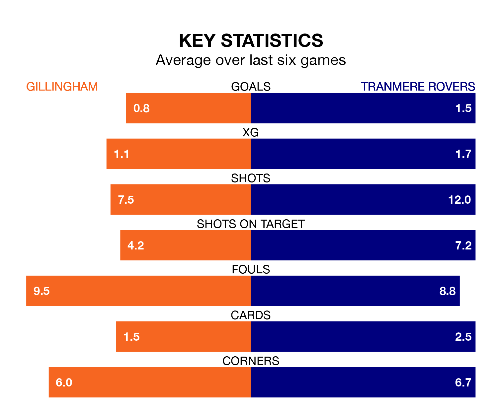

Tranmere Rovers travel to Gillingham on Saturday in EFL League Two.
The visitors come into the game on the back of a win in their last match, having beaten Sutton United 1-0 at home, with a goal from Robert Apter.
The Gills, meanwhile, lost their last match, 2-0 against Barrow.
With 34 goals in 36 games so far this season, Gillingham are the league's joint-second-lowest scorers with 0.9 goals per game. But they are conceding fewer than average too, letting in 41 goals at a rate of 1.1 per game.
Tranmere, meanwhile, are average scorers, with 1.5 goals per game. They have conceded 1.4 goals per game.
In Jake Turner, the Gills can rely on one of the league's safest pair of hands. He has kept 11 clean sheets in his 33 appearances this season in EFL League Two.
In Rovers' net, Luke McGee has seven clean sheets in 35 games. He has conceded a goal every 69 minutes, 10% more often than the 78 minutes between goals for Turner.
The away side are 18th in the table after 36 games, of which they have won 13 and drawn four, earning 43 points.
The hosts are nine places ahead of Tranmere in ninth, with 16 wins and six draws putting them on 54 points.
Gillingham are in mixed form in EFL League Two, with two wins and two draws from their last six games.
With two wins and four losses over that period, Tranmere's form is slightly worse – they have taken six points from 18, compared to Gillingham's eight.
In the last five years, Gillingham and Tranmere have played each other on four occasions. Gillingham won one of them, Tranmere two, and they drew once.
On average, the Gills scored 1.2 goals and Tranmere 2.0 in those matches.
Their last meeting was on November 25, when Tranmere won 3-1 at home.
Saturday's match will be refereed by James Linington, who is taking charge of his first EFL League Two game this season.
He is yet to oversee a match featuring either Gillingham or Tranmere this season.
Updated: 09:34 (UTC), 08/03/24